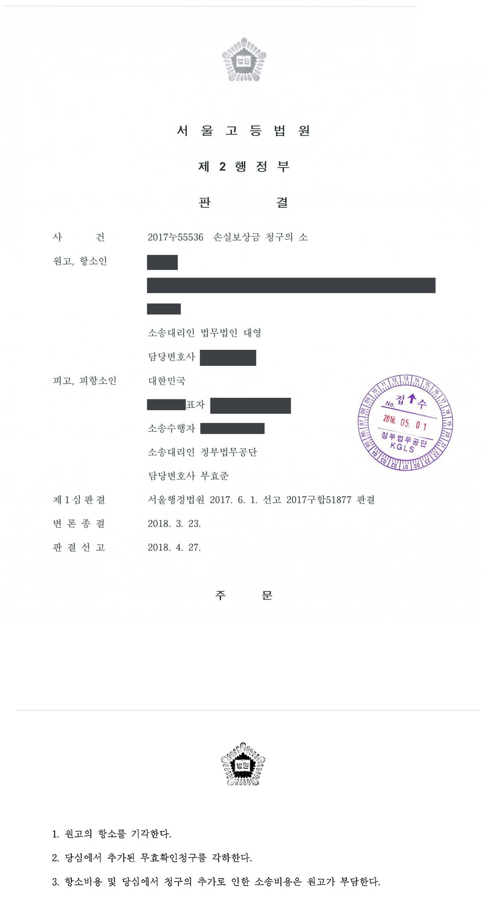

광업권 관련 손실보상금 청구소송 (1·2심)
서울행정법원 2017구합51877 · 서울고등법원 2017누55536 · 담당변호사 부효준
판결문


사건의 요지
채굴권자가 광업권 취소 등을 이유로 국가에 손실보상을 구한 사건으로, 자연환경보전법상 손실보상청구에 재결전치주의가 적용되는지와 보상청구권의 성립 여부가 다투어졌습니다.
사건의 주요 내용
원고는 규석 채굴권 2건(광구 면적 69ha와 137ha)을 다른 사람과 공동으로 소유한 광업권자였습니다. 원고는 2014년 2월 광산 개발을 위하여 국유림 관리기관에 국유림사용허가와 산지일시사용허가를 신청하였으나, 신청지가 사용계획이 확정된 국유림이고 자연환경보전법상 생태·경관보전지역 안에 있다는 등의 이유로 2014년 3월 거부되었고, 그 거부처분에 대한 취소소송도 2015년 12월 기각되어 항소 취하로 확정되었습니다.
그 뒤 주무부장관으로부터 광업권 취소 권한을 위임받은 등록관청은 2016년 8월, 원고가 채굴중단 인가를 받지 않고 1년 이상 채굴을 중단하였다는 이유로 광업법 제35조 제2항 제6호에 따라 두 채굴권의 등록을 취소하였습니다. 원고는 이 취소가 실질적으로 자연환경 보전이라는 공익상 필요에 따른 것이므로 자연환경보전법 제53조 또는 광업법 제34조 제3항에 따라 손실을 보상해야 하고, 그렇지 않더라도 처분사유가 없는 위법한 처분이므로 채굴권 개발이익 상당의 손해를 배상해야 한다며 국가를 상대로 5,000만 원을 청구하였습니다.
부효준 변호사는 피고 국가를 대리하였습니다. 제1심(2017년 6월)은 자연환경보전법에 따른 손실보상청구 부분을 각하하고 나머지 청구를 기각하였으며, 항소심(2018년 4월)은 원고의 항소를 기각하고 항소심에서 추가된 처분 무효확인청구도 각하하였습니다.
쟁점
- 공동광업권자 중 1인이 탈퇴한 뒤 남은 광업권자가 단독으로 광업권 관련 손실보상·손해배상을 청구할 수 있는지
- 자연환경보전법 제53조에 따른 손실보상청구는 같은 조 제3항의 재결절차를 먼저 거쳐야 하는지(재결전치주의)
- 채굴중단 인가 없이 1년 이상 채굴을 중단하였다는 이유의 광업권 취소에 광업법 제34조 제3항의 손실보상 규정을 적용 또는 유추적용할 수 있는지
- 처분사유가 인정되지 않아 위법한 광업권 취소처분에 관하여 국가배상책임의 요건인 공무원의 과실과 손해가 인정되는지
원고의 주장
- 국유림 사용허가가 생태·경관보전지역이라는 이유로 거부되어 채굴을 할 수 없게 되었으므로 채굴권 취소는 실질적으로 자연환경 보전이라는 공익상 필요에 따른 것이고, 따라서 국가는 자연환경보전법 제53조 제1항 또는 광업법 제34조 제3항(직접 적용이 안 되면 유추적용)에 따라 손실을 보상해야 한다고 주장하였습니다.
- 2014년 2월 10일부터 2016년 2월 9일까지 채굴중단 인가가 있었으므로 처분 당시 1년 이상 채굴을 중단한 상태가 아니었고 중단 전 3년 안인 2011년 5월에 생산실적도 있어 처분사유가 인정되지 않으므로, 위법한 처분으로 채굴권의 개발이익 상당 손해를 입었다고 주장하였습니다.
- 항소심에서는 자연환경보전법상 손실보상청구에 재결전치주의가 적용되지 않는다고 다투면서, 처분의 하자가 중대·명백하다며 처분 무효확인청구를 추가하였습니다.
부효준 변호사의 주장
- 광업법상 공동광업권자는 조합관계에 있어 조합재산에 관한 소송은 고유필수적 공동소송인데 원고가 단독으로 소를 제기하였으므로 부적법하다고 본안전항변을 하였습니다.
- 채굴권 취소처분은 공익상 이유에 따른 광업법 제34조 제1항·제2항의 취소가 아니라 채굴중단을 이유로 한 제35조 제2항 제6호의 취소이므로 제34조 제3항의 손실보상 대상이 아니고, 최종 생산이 있은 2011년 6월부터 채굴중단 인가가 있은 2014년 2월까지 1년이 넘도록 채굴이 중단되었으므로 처분사유도 인정된다고 주장하였습니다.
- 처분이 위법하다고 보더라도 담당 공무원에게 객관적 주의의무 위반의 과실이 없고, 국유림 사용허가 거부처분이 확정되어 처분과 관계없이 채굴을 할 수 없는 상태였으므로 손해도 발생하지 않았다는 점을 들었습니다.
법원의 판단
법원은 먼저 피고의 본안전항변을 받아들이지 않았습니다. 공동광업권자는 조합관계에 있지만 다른 공동광업권자가 탈퇴의사를 표시하여 원고만이 조합원으로 남았으므로 원고가 단독으로 조합채권을 행사하는 소는 적법하다고 보았습니다. 그러나 자연환경보전법 제53조에 따른 손실보상은 같은 조 제3항의 재결절차를 거친 뒤 그 재결에 불복하는 방법으로만 다툴 수 있다는 대법원 판례(2011. 9. 29. 선고 2009두10963 판결)에 따라, 재결을 거치지 않고 바로 국가에 보상을 청구한 부분은 부적법하다고 보아 직권으로 각하하였습니다.
광업법 제34조 제3항의 손실보상은 공익상 이유로 광업권을 취소한 경우(제34조 제1항·제2항)에만 적용되고 이 사건 취소는 제35조 제2항 제6호에 따른 것이어서 해당하지 않으며, 다른 법령상 인·허가를 받지 못하여 채굴할 수 없는 사정이 있더라도 채굴중단 인가 없이 1년 이상 중단하면 취소할 수 있다는 대법원 판례(1997. 9. 9. 선고 96누10102 판결) 등에 비추어 유추적용할 것도 아니라고 판단하였습니다.
손해배상청구에 관하여는, 2014년 2월부터 2016년 2월까지 채굴중단 인가가 있었고 처분은 그 인가 종기부터 약 6개월 뒤에 있었으므로 '인가 없이 1년 이상 중단'이라는 처분사유가 인정되지 않아 처분이 위법하다고 보았습니다. 인가 전 중단기간을 합산해야 한다는 피고 주장은 인가 뒤 언제라도 취소할 수 있게 되어 선행 인가와 상반된다는 이유로 배척되었습니다.
그러나 등록관청이 인가 전 약 2년 8개월의 중단기간을 근거로 처분한 데 나름의 합리적 근거가 있고 반대 취지의 유권해석·선례도 없었으므로 평균적 공무원의 객관적 주의의무 위반이라고 볼 수 없고, 국유림 사용허가 거부처분이 확정되어 처분과 관계없이 채굴할 수 없는 상태였으므로 손해도 증명되지 않았다고 보아 손해배상청구를 기각하였습니다. 항소심은 제1심 판단이 정당하다고 보아 항소를 기각하였고, 항소심에서 추가된 처분 무효확인청구는 처분을 자신의 명의로 한 등록관청이 아닌 국가를 피고로 한 것이어서 피고적격이 없다는 이유로 각하하였습니다.
위 규정들을 종합하여 보면, 취약한 자연생태-자연경관의 보전을 위하여 특히 필요한 경우로서 개발사업 또는 영농행위를 제한받는 자가 주무부장관 또는 지방자치단체의 장으로부터 자연환경보전법 제53조에 따라 재산상 손실에 대한 보상을 받기 위해서는 자연환경보전법 제53조 제3항에 규정된 재결절차를 거친 다음 그 재결에 대하여 불복이 있는 때에 행정소송 등을 제기하여 권리구제를 받을 수 있을 뿐, 이러한 재결절차를 거치지 않은 채 곧바로 손실보상을 청구하는 것은 허용되지 않는다고 봄이 타당하다(대법원 2011. 9. 29. 선고 2009두10963 판결 참조).
서울행정법원 2017구합51877 판결 이유 '3. 나.'(자연환경보전법에 따른 손실보상청구 부분의 적법 여부)
위와 같은 법리에 비추어 이 사건에 관하여 보건대, 피고 산하 등록관청의 이 사건 처분이 광업법을 위반한 위법한 처분임은 앞서 본 바와 같다. 그러나 이 사건 각 채굴권에 기한 최종생산보고가 있은 다음달인 2011. 6.부터 이 사건 각 채굴권에 대한 채굴중단인가가 있은 2014. 2. 10.까지 약 2년 8개월의 기간 동안 채굴중단인가 없이 채굴이 중단되었고, 등록관청은 위 기간을 광업법 제35조 제2항 제6호 소정의 채굴중단기간으로 보아 이 사건 처분을 하였으므로 등록관청의 이 사건 처분에 나름의 합리적 근거가 없는 것으로 보이지 않는 점, '인가를 받지 아니하고 계속하여 1년 이상 채굴을 중단한 경우라도 그 이후에 장래의 기간에 관한 채굴중단인가를 받았다면 인가를 받기 이전의 위와 같은 기간으로 광업권 취소의 근거로서 광업법 제35조 제2항 제6호 본문의 요건이 충족된다고 보기 어렵다'는 것에 대하여 유권적 해석, 선례 등이 있다는 특별한 사정도 없었던 점, 앞서 본 바와 같이 광업법 제35조 제2항 제6호 단서의 경우에 해당하는 경우로 인정할 만한 자료가 부족한 점 등을 종합하여 보면, 이 사건 처분이 결과적으로 위법한 것으로 평가된다고 할지라도 피고 산하 등록관청이 성실한 평균적 공무원으로서 요구되는 객관적 주의의무를 어김으로써 피고에게 손해배상책임을 인정할 만큼 과실이 있었다고 보기에는 부족하다.
서울행정법원 2017구합51877 판결 이유 '4. 나. 2) 가)'(손해배상책임의 발생 여부 — 공무원의 과실)
위와 같은 법리에 비추어 이 사건에 관하여 보건대, 이 사건에서 원고가 주장하는 손해가 발생하였다고 볼 수 있으려면, 이 사건 처분이 없었더라면 원고가 이 사건 각 채굴권에 기한 채굴행위를 하여 생산된 광물을 판매할 수 있었음에도 이 사건 처분이 있음으로써 그 광물 판매대금 상당의 수입이 발생하지 않았다는 점이 증명되어야 할 것인데 이를 인정할 아무런 증거가 없다. 오히려 앞서 본 바와 같이, 원고는 이 사건 각 채굴권에 기한 채굴을 위하여 국유림 관리기관에 국유림사용허가 등을 신청하였으나 국유림 관리기관은 이를 거부하는 처분을 하였고, 원고가 위 거부처분에 대하여 취소소송을 제기하였으나 원고의 청구를 기각하는 판결이 선고되어 확정되었던 사실에 비추어 보면, 이 사건 처분으로 인한 이 사건 각 채굴권의 취소 여부와 관계없이 원고는 이 사건 각 채굴권에 기한 채굴행위를 할 수 없는 상태에 있었다.
서울행정법원 2017구합51877 판결 이유 '4. 나. 2) 나)'(손해의 발생 여부)
※ 판결 이유 가운데 이 사건의 판단 기준이 된 부분을 그대로 옮긴 것으로, 당사자 이름 등은 가렸습니다.
이 사건이 보여 주는 것
광업권 취소처분이 뒤에 위법하다고 평가되더라도 그것만으로 국가배상책임이 인정되지는 않습니다. 담당 공무원이 평균적 공무원에게 요구되는 객관적 주의의무를 위반하여 처분이 객관적 정당성을 잃었다고 볼 수 있어야 하고, 처분이 없었더라면 얻을 수 있었던 이익이 실제로 있었다는 점(손해)도 청구인이 증명해야 합니다. 이 사건에서는 국유림 사용허가 거부가 확정되어 어차피 채굴할 수 없었다는 사정이 손해 부존재의 근거가 되었습니다.
법률이 손실보상에 관하여 재결절차를 정해 둔 경우(자연환경보전법 제53조)에는 재결을 거치지 않고 곧바로 국가에 보상금을 청구하는 소는 각하되고, 처분의 취소·무효를 다투려면 국가가 아니라 처분을 한 행정청을 피고로 하여야 합니다. 광업권자가 인·허가 문제로 채굴을 쉬어야 할 때에는 미리 채굴중단 인가를 받아 두는 것이 광업권 취소를 막는 기본적인 방법이라는 점도 이 판결에서 확인됩니다.
비슷한 처분을 받으셨다면
행정처분은 처분이 있음을 안 날부터 90일 이내에 행정심판이나 취소소송으로 다투어야 하고, 기간이 지나면 돌이킬 수 없는 처분은 집행정지를 서둘러야 합니다. 처분서를 받은 날짜부터 확인해 드립니다.